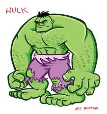

Originally not doing so well in Elementary School, I was determined to continue my streak through High School, and I found that I was at least Good at this.

Growing up in Washington D.C., the world always seemed so big and confusing. I frequently found myself sketching and drawing imaginary worlds that I would surely explore one day when I grew up. Kindergarten to this day still makes my stomach hurt, just thinking of all the shapes and colors and decorations on the walls.

At least I could lose myself in my crayons...

I have always been slow at working, but someimes it really helps me focus on creating a world to escape through.
better yet I find that while there is always so much to learn about web creation, it gives me an escape to color once again. When it comes to creating things and making web pages, I really seem to like using notepad for its simplicity. I used notepad as my code editor, but I am ready to learn if I can.
